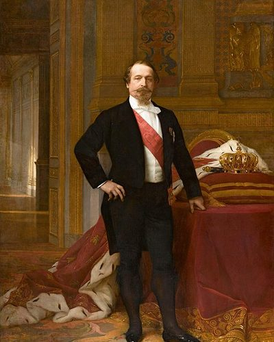

Ideologies / Nationalist
What is Bonapartism?
Bonapartism is a political ideology in the Nationalist family. It presents the Napoleonic system as the true heir of the Revolution: a strong hereditary executive who draws his legitimacy directly from the people by plebiscite, over the heads of parliament and parties. It promises order, national glory, a centralised efficient administration and material progress for all classes.
One leader, chosen directly by the people.
Defined from: Louis-Napoléon Bonaparte, Napoleonic Ideas (1839)
See how close you are to Bonapartism Dare a friend to answer as one


Where Bonapartism stands on 13 axes
Each axis runs from 0 to 100. A score of 50 is the middle. On a classic compass it sits in the Authoritarian Right quadrant.
| Axis | Position | Score | In words |
|---|---|---|---|
| EconomyMarket to Planned | 50 | Balanced | |
| OwnershipPrivate to Collective | 25 | Strongly Private | |
| RightsLiberty to Security | 80 | Strongly Security | |
| GovernmentDemocracy to Autocracy | 90 | Very strongly Autocracy | |
| StructureDecentralised to Centralised | 100 | Very strongly Centralised | |
| NationInternationalist to Nationalist | 85 | Very strongly Nationalist | |
| ImmigrationMulticulturalist to Assimilationist | 80 | Strongly Assimilationist | |
| ValuesProgressive to Traditional | 55 | Balanced | |
| TechnologyAccelerationist to Precautionary | 30 | Strongly Accelerationist | |
| EnvironmentIndustrialist to Environmentalist | 20 | Strongly Industrialist | |
| ReligionSecular to Religious | 40 | Leans Secular | |
| MilitaryPacifist to Militarist | 95 | Very strongly Militarist | |
| TradeFree Trade to Protectionist | 65 | Leans Protectionist |
Ideologies closest to Bonapartism
- Italian Fascism85% alike
- Prussian Socialism85% alike
- British Fascism84% alike
- Kautilyan Statecraft82% alike
- Ba'athism82% alike
Its opposite on this map is Tolstoyan Anarcho Pacifism, at 19%.
Parties near Bonapartism
- National Fascist PartyItaly. The Doctrine of Fascism (1932)85% alike
- United RussiaRussia. People's Programme (2021)80% alike
- KuomintangChina. Three Principles of the People (1924)78% alike
- Justicialist PartyArgentina. The Twenty Truths of Peronism (1950)77% alike
Common questions
What is Bonapartism?
Bonapartism is a political ideology in the Nationalist family. It presents the Napoleonic system as the true heir of the Revolution: a strong hereditary executive who draws his legitimacy directly from the people by plebiscite, over the heads of parliament and parties. It promises order, national glory, a centralised efficient administration and material progress for all classes.
What does Bonapartism believe?
In one line: One leader, chosen directly by the people. Its strongest positions are Centralised, Militarist, Autocracy. It presents the Napoleonic system as the true heir of the Revolution: a strong hereditary executive who draws his legitimacy directly from the people by plebiscite, over the heads of parliament and parties. It promises order, national glory, a centralised efficient administration and material progress for all classes.
Who founded Bonapartism?
Bonapartism is defined here from Napoleonic Ideas (1839) by Louis-Napoléon Bonaparte. The thinker most tied to it is Louis-Napoléon Bonaparte (1808 to 1873).
Is Bonapartism left wing or right wing?
On a classic two axis compass Bonapartism falls in the Authoritarian Right quadrant, which means the economic right and the authoritarian side. Left and right hide a lot, though, which is why EthosScales scores it on thirteen separate axes.
How is Bonapartism different from Italian Fascism?
They are close: 85% alike. The biggest gaps are on Values, where Bonapartism scores 55 and Italian Fascism scores 75, and Trade, where Bonapartism scores 65 and Italian Fascism scores 85. On each axis, 0 is one end and 100 is the other.
Think this is wrong? Suggest a correction. The scores are editorial estimates.